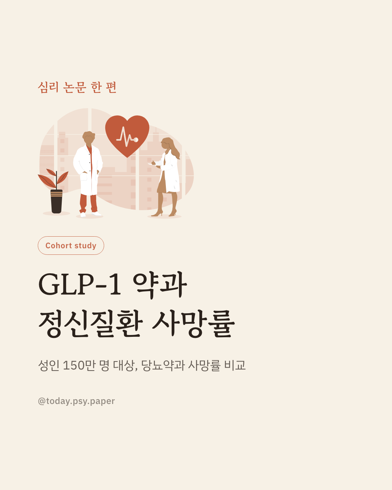
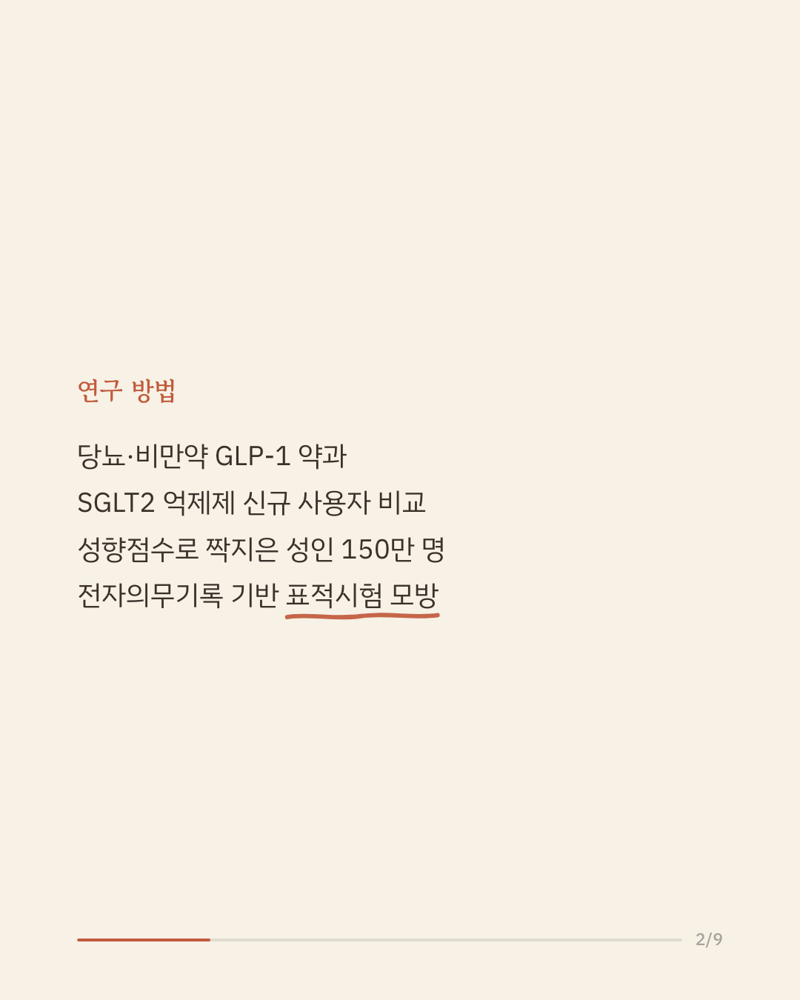
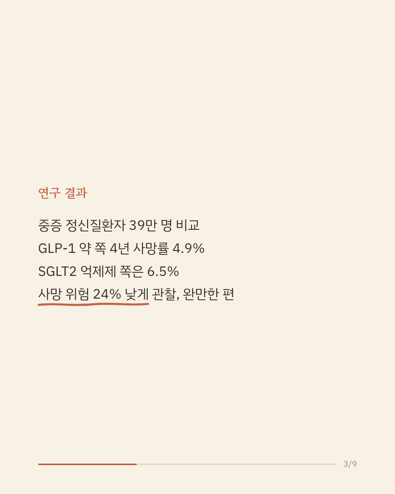
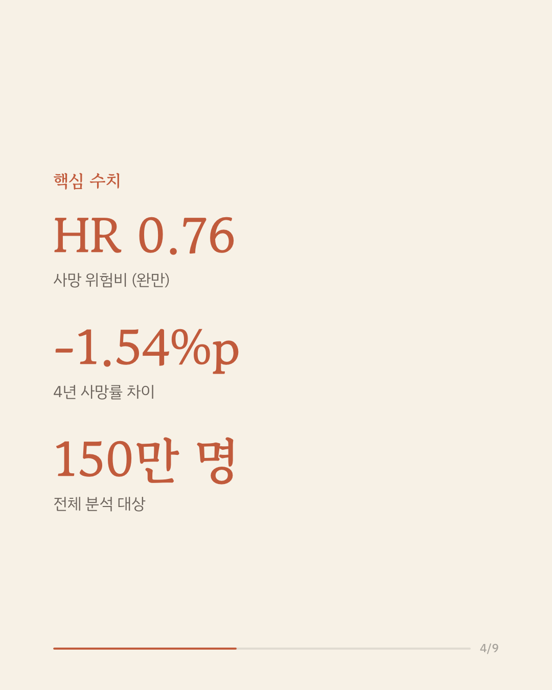
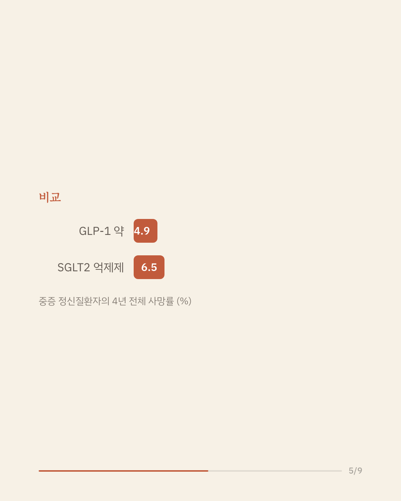
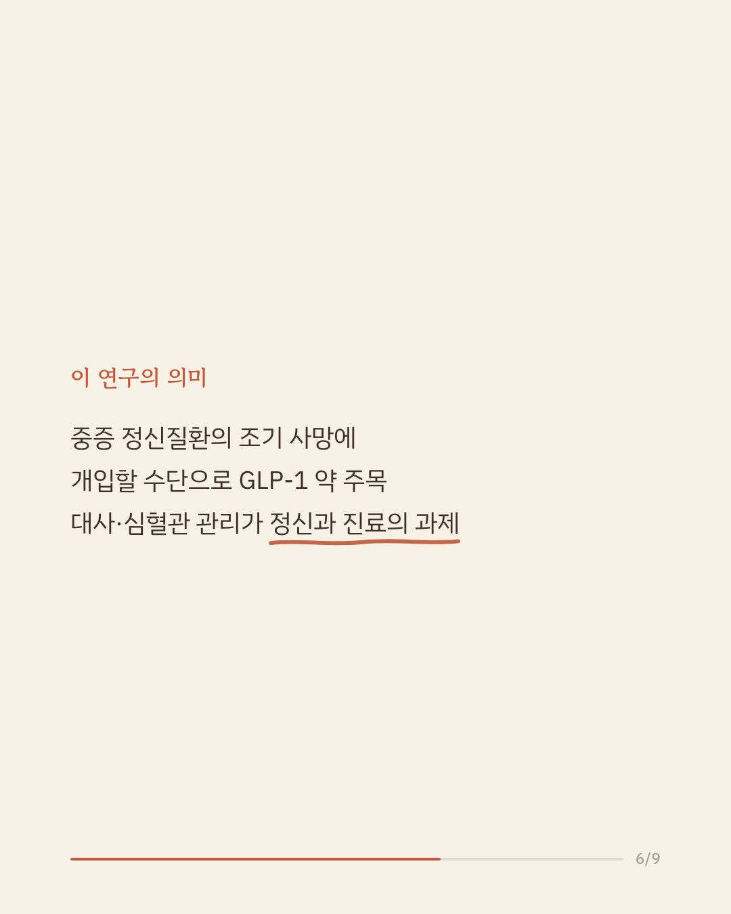
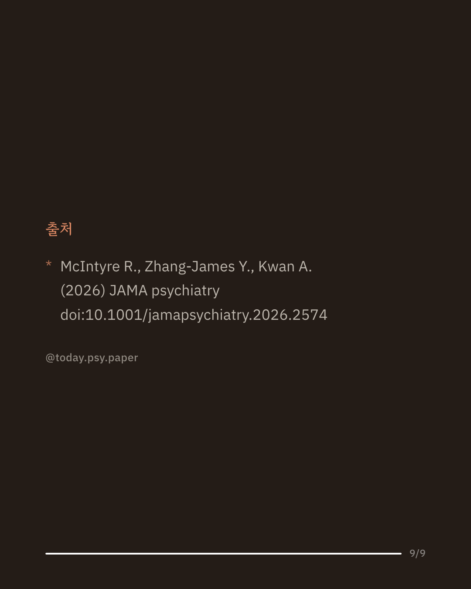

조현병, 양극성 장애, 우울증 같은 중증 정신질환이 있는 사람은 일반 인구보다 기대수명이 짧고, 그 주된 원인은 심혈관 질환입니다. 이 조기 사망 부담을 어떻게 줄일지는 정신건강 분야의 오랜 과제입니다. 연구진은 다국적 전자의무기록망(TriNetX)을 이용해, 당뇨·비만 치료제인 GLP-1 수용체 작용제와 SGLT2 억제제를 새로 시작한 성인 약 150만 명을 성향점수로 짝지어 사망률과 심혈관 사건을 비교했습니다. 중증 정신질환이 있는 약 39만 명(19만 5천 쌍)에서, GLP-1 약을 시작한 쪽의 4년 전체 사망률은 4.9%로 SGLT2 억제제를 시작한 쪽의 6.5%보다 낮았습니다. 위험비는 0.76(95% 신뢰구간 0.74~0.78), 절대 위험 차이는 약 1.5%포인트였고, 정신질환이 없는 집단에서 나타난 경향과 대체로 같은 방향이었습니다. 이 결과는 중증 정신질환자의 심혈관·대사 위험 관리가 정신과 진료의 핵심 과제이며, GLP-1 약이 그 수단의 하나로 검토될 수 있음을 시사합니다. 다만 무작위 배정이 아닌 관찰 연구여서 처방 선택에 영향을 준 숨은 요인이 남아 있을 수 있고, 인과관계를 말하기는 어렵습니다. 단일 연구이므로 확대 해석은 조심해야 합니다. 출처: JAMA Psychiatry (2026), 'Glucagon-Like Peptide 1 Receptor Agonists, Mortality, and Cardiovascular Outcomes in Serious Mental Illness' #정신건강정보 #중증정신질환 #조현병 #양극성장애 #정신과연구
python3 publish.py 42647034